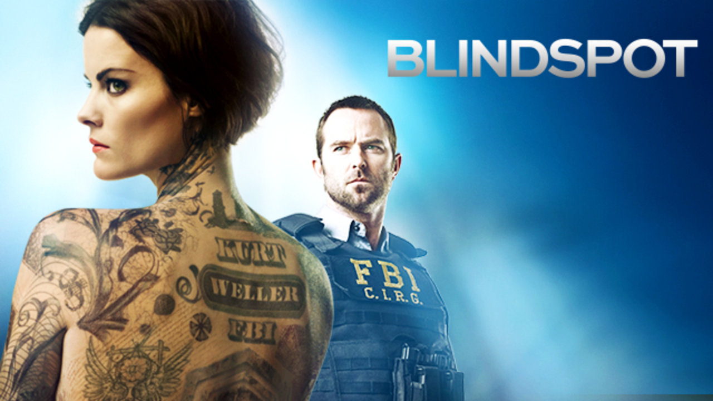

DETALLE DE LAS SERIES
GREYS ANATOMY

- ESTRENO: 27 de marzo de 2005
- RATING:6,6/10
-
SINOPSIS: La serie se centra en la vida de los cirujanos internos, residentes y especialistas a medida de que se convierten en médicos cirujanos experimentados mientras tratan de equilibrar sus relaciones personales y profesionales.
- GENERO:DRAMA
- AGREGAR A FAVORITOS
GOSSIP GIRL

- ESTRENO: 19 de septiembre de 2007
- RATING: 6,4/10
-
SINOPSIS:La serie gira en torno de las vidas privilegiadas de adolescentes en el Upper East Side de Manhattan en la ciudad de Nueva York.
- GENERO: DRAMA
- AGREGAR A FAVORITOS
BLINDSPOT
- ESTRENO: 21 de septiembre de 2015
- RATING: 5,7/10
-
SINOPSIS: Una mujer, sin recuerdos de su pasado, es encontrada desnuda en por el FBI en Times Square dentro de una bolsa de viaje con su cuerpo totalmente cubierto de enrevesados tatuajes. El agente que la acompaña se culpa por su desaparición al enterarse cuál es su verdadera identidad.
- GENERO: ACCION
- AGREGAR A FAVORITOS
MODERN FAMILY

- ESTRENO: 23 de septiembre de 2009
- RATING: 7,5/10
-
SINOPSIS: Claire y Phil son dos padres jóvenes que no se ponen de acuerdo en la manera de educar a sus conflictivos hijos. Jay vive sin complejos su matrimonio con Gloria, una explosiva colombiana varias décadas más joven que él. Y Mitchell y Cameron son una colorida pareja homosexual que acaba de adoptar una niña vietnamita.
- GENERO: COMEDIA
- AGREGAR A FAVORITOS
ZUMBO'S JUST DESSERT

- ESTRENO: 22 de agosto de 2016
- RATING: 6,5/10
SINOPSIS: El mago de los postres, Adriano Zumbo, busca talento amateur en una intensa competencia en la que intentan ganar un premio de 100 000 dólares.
- GENERO: REALITY
- AGREGAR A FAVORITOS